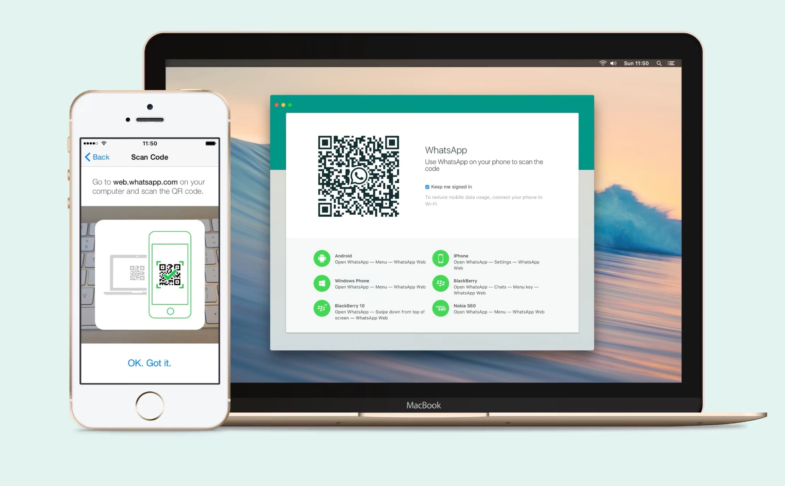

WHATSAPP WEB
To Use whatsapp web on your computer:
Open whatsapp on your phone
tap
menu
or
setting
and section
LInded listed
this phone to make create a whatapp during to easy
need help to get started ?
